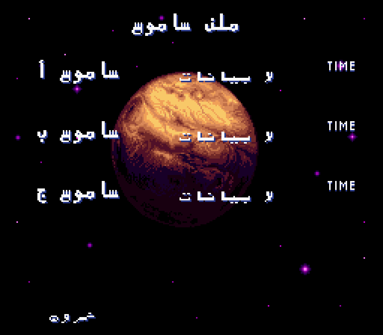
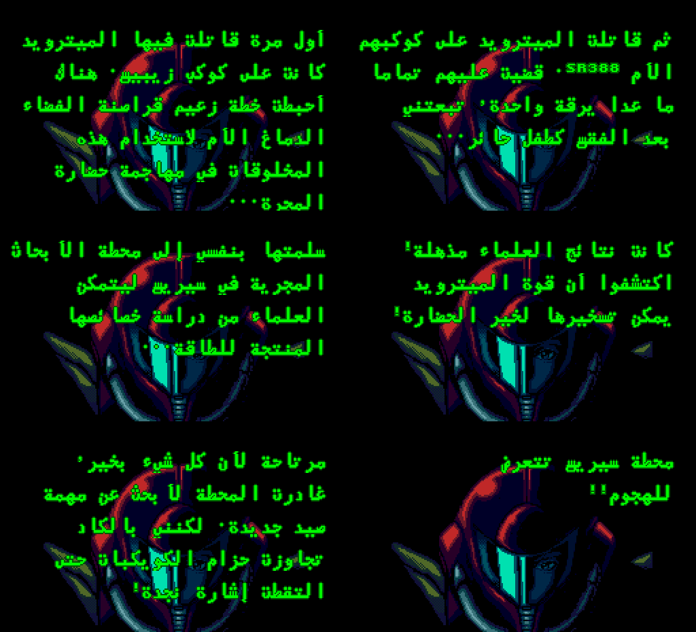
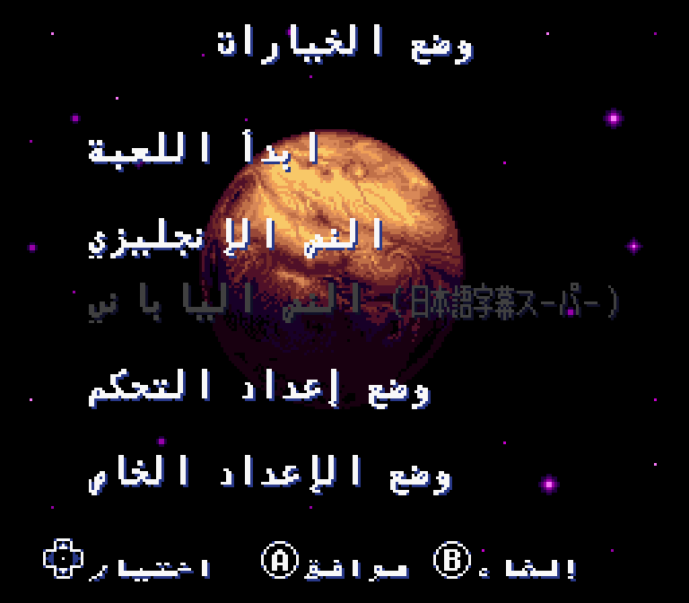
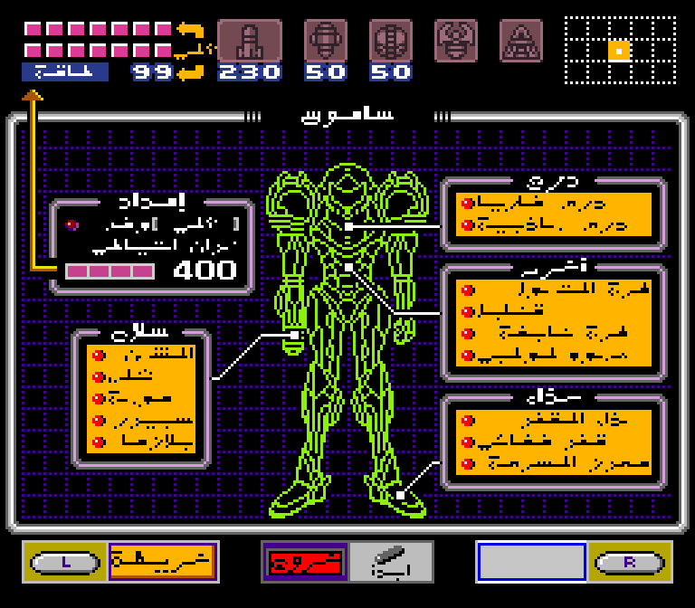
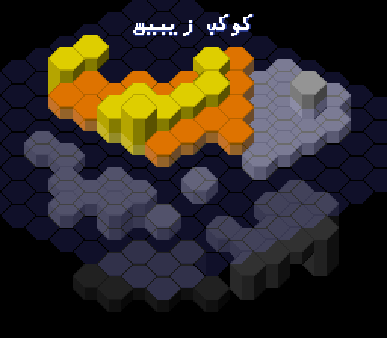
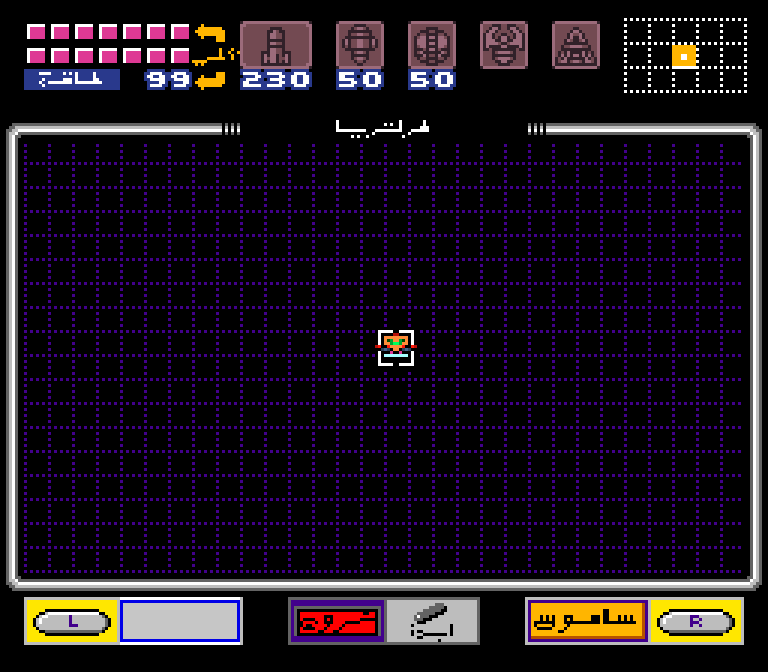
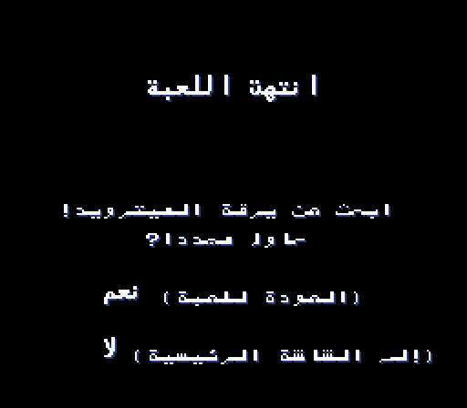
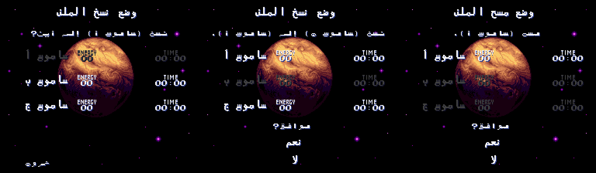
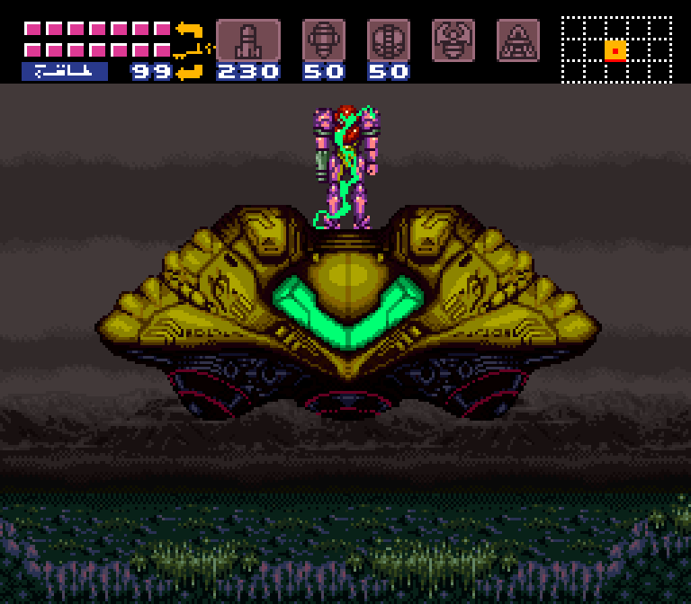

سوبر ميترويدSUPER METROID · ARABIC TRANSLATION
تعريب عربي لأغلب نصوص اللعبة الشهيرة على SNES، بكتابة من اليمين إلى اليسار وتشكيل كامل للحروف المتصلة. رقعة فقط، وتطبّقها على نسختك.

عن التعريب
عن المشروع
Super Metroid من أشهر ألعاب الأكشن والاستكشاف على SNES، ولم أجد لها تعريباً عربياً سابقاً. هذا المشروع يعرّب رسائلها وقوائمها وقصة مقدمتها وشاشات التوقف، مع معالجة حقيقية للغة العربية داخل نظام النصوص القديم للعبة.
العمل كله على الملف نفسه: ضغط وإعادة توزيع للبيانات، وخطوط جديدة بثلاثة أحجام، واختبارات آلية على المحاكي.
كيف تُرجم
النصوص العربية كتبها Claude (ذكاء اصطناعي)، ولم تمرّ بعد بمراجعة مترجم بشري. لذلك فالتعريب مصنَّف آلياً، والمراجعة البشرية مرحَّب بها جداً.
كل النصوص العربية مع أصلها الإنجليزي في ملف المراجعة داخل المستودع، وتصحيحاتك تُرسَل عبر Issue.
ملاحظات وتنبيهات
نسخة تجريبية: لم تُختبر بلعب كامل حتى النهاية بعد، وقد توجد نصوص بالإنجليزية أو أخطاء لم تظهر. من يختم اللعبة فليبلّغ.
اختُبر التعريب في Mesen 2 فقط، ولم يُجرَّب على جهاز حقيقي أو محاكيات أخرى.
اختُصرت بعض الكلمات بسبب ضيق الخانات، مثل "سلاح" لـ BEAM.
مميزات التعريب
قصة المقدمة كاملة

شاشة الملفات والخيارات

شاشة التوقف
التسميات وأسماء العناصر الأربعة عشر وأزرار الخريطة وأسماء المناطق السبعة وصندوق الخزان الاحتياطي.

شاشة تحميل الملف

الخريطة وGAME OVER والرسائل
الخريطة بأسماء مناطقها، وشاشة GAME OVER، وحوارات الملفات.




ما تم وما لم يتم
معرَّب
- رسائل الصناديق وأوصافها
- الملفات والخيارات ونعم/لا
- قصة المقدمة (7 صفحات)
- GAME OVER
- شاشة التوقف والخريطة وصندوق الاحتياطي
- عنوان شاشة الخريطة بعد تحميل الملف
- الواجهة أثناء اللعب
غير معرَّب عمداً
- شعار شاشة العنوان
- سطور النهاية الأربعة
- أسماء المطورين في الكريديت
- الحرفان L وR
- وضع النص الياباني
بحسب جردي المُعرَّب 99.6٪ من حجم النص الذي عددته، وهو رقم عن ما وصلتُ إليه فقط، فقد توجد نصوص لم أصل إليها.
الصانع
- صانع التعريب
- Mr S
- الكتابة والأدوات
- بمساعدة Claude (Anthropic)
- الرخصة
- CC BY-NC-SA 4.0 (الترجمة والموقع)، وMIT (الكود)
- الإصدار
- v1.0.1
التنزيل
- احصل على نسختك الأصلية: Super Metroid (Japan, USA) (En,Ja)، بلا ترويسة، حجمها 3,145,728 بايت.
SHA-1: da957f0d63d14cb441d215462904c4fa8519c613 - نزّل الرقعة
SuperMetroid_Arabic.bpsمن صفحة الإصدار. - طبّقها بأي أداة BPS (Flips أو RomPatcher.js) على نسختك. النتيجة الصحيحة SHA-1: 27758c9ce3075411f10c34b1bb9a72f6145dc812
لا نوزّع اللعبة. هذا الموقع والمستودع لا يحتويان أي ملف لعبة، ولن يحتويا. عليك أن تحصل على نسختك بنفسك. وجدتَ مشكلة؟ افتح Issue.